7 Life Cycle Model
7.1 Overview
The integrated life cycle model is a core component of the CEMPRA tool. The life cycle modeling component is a valuable endpoint to evaluate and understand cumulative effects through the lens of demographic rates and population ecology. Some user groups may be satisfied with the simplified Joe Modelling (stressor roll-up) component of the CEMPRA tool and, therefore, not wish to interact with the life cycle model. However, other user groups may benefit substantially from working with the life cycle modeling component. Framing cumulative effects through an integrated life cycle model allows us to understand critical bottlenecks to the productivity and capacity of a target study system. In the CEMPRA life cycle modeling component, stressor-response relationships are linked to vital rates such as life-stage-specific survivorship, fecundity, and carrying capacity. Therefore, the life cycle modeling component can be used to make relative comparisons between locations (spatial units), scenarios, and stressors to understand limiting factors and design recovery action strategies.
At its core, the life cycle modeling component of the CEMPRA tool is a stage-structured matrix model (see Caswell 2000). A simplified life cycle profile csv data input file (described below) is populated by the user and then imported to parameterize and construct components of the matrix model (e.g., number of stages, stage-specific survivorship, years in each stage, etc.).
When the life cycle model is run, a hypothetical population is projected forward in time through simulations. The stage-structured matrix model governs the behavior of the simulated population. Density-dependent growth constraints are implemented using either compensation ratios (if the location and stage-specific capacities are unknown) or location and stage-specific Beverton-Holt functions (discussed further below). Location-specific stressor values will interact with the simulated population to curtail or enhance stage-specific survivorship, fecundity, or habitat capacities. Population projections are then compared across scenarios and/or locations to evaluate the relative change in equilibrium abundance estimates for a target life stage (i.e., carrying capacities) and/or the intrinsic productivity (i.e., growth rates) possible at low densities.
The life cycle modeling component of the CEMPRA tool performs a large number of calculations behind the scenes. While convenient, the embedded complexity can create misleading results if input values and assumptions are not carefully considered. It is assumed that users of the life cycle model have an understanding of basic concepts in population ecology (e.g., population growth rates, carrying capacities etc.) and a familiarity with matrix life cycle models. The following resources provide useful refreshers for interested individuals:
- Basic refresher on matrix life cycle models: https://compadre-db.org/Education/article/what-is-a-matrix-model
- An in-depth overview of stage-structured matrix models: https://blog.uvm.edu/tdonovan-vtcfwru/files/2020/06/12-Donov-pages-322-CB.pdf
- Density-dependent and density-independent constraints on population growth: https://www.nature.com/scitable/knowledge/library/population-limiting-factors-17059572/
- Density-dependent growth functions (review section on the Beverton-Holt function): http://courses.ecology.uga.edu/ecol4000-fall2018/wp-content/uploads/sites/22/2018/08/Chapter-3-complex-dynamics.pdf
The model code for the life cycle modeling component of the CEMPRA tool follows a similar structure to the codebase used by Van der Lee and Koops (2020). The underlying code and assessment framework was modified substantially by Dr. Kyle Wilson and Matthew Bayly (M.J. Bayly Analytics Ltd.) throughout 2022 and 2023. Code snippets, functional forms, and rationale largely follow conventional workflow demographic modeling outlined in Schaub and Kéry (2021). Users are encouraged to review these resources for additional background and rationale.
7.2 Data Input: Life Cycle Profiles
7.2.1 Purpose
The life cycle profile is the main input file for the life cycle model. It provides the names and values of key life cycle parameters and vital rates, including parameters for survival, growth, reproduction, and density-dependent effects. This file makes it easy for users to store and edit life cycle parameter values outside of the R Shiny web application. The following sections break down the components of the life cycle profile file with illustrative examples. The intent of the following sections is to provide a detailed explanation of how the life cycle model works with a description of each component of the input file so that users may create their own life cycle profile for a target species of interest.
7.2.2 Layout
The life cycle profile is a comma-separated values (CSV) file that contains the names and values of each of the parameters within the life cycle model. Life cycle profiles will be unique to each species or life history variant. The life cycle profile file contains three columns:
- Parameters: The full name/description of the parameter. This column can be adjusted by the user to provide more relevant nicknames for each stage (e.g., fry survival, smolt survival etc.)
- Name: The short form name of the parameter used in the model. The names of these parameters are referenced by the model code and should not be modified (apart from adding or removing stage classes).
- Value: The numeric value of the parameter used in the model. The values are adjusted for each species profile.
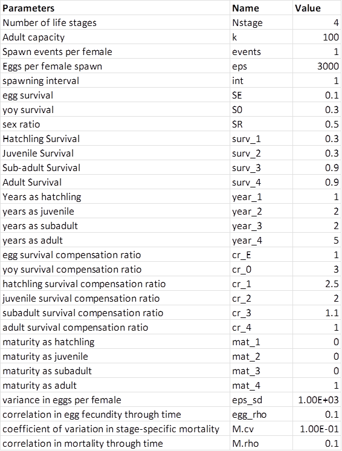
The figure shows an example of a life cycle profile CSV input file with four stage classes.
7.3 Matrix Life Cycle Model
The stage-structured matrix modelling framework, embedded within the CEMPRA tool, can be represented graphically by a life cycle diagram (figure) or a transition matrix. The transition matrix can be represented symbolically with either equations (Table 1) or absolute values (Table 2).
The life cycle diagram figure shows the sample life cycle profile. Figure 7.1 is represented as a life cycle diagram. In the diagram and input file, we see that there are four main stages (stage_1 to stage_4). stage_1 individuals can become stage_4 individuals after three years in the simulation, but it is also possible for some individuals to spend more than one year in stages 2, 3, and 4 (denoted by the circular loop). We also see that stage_4 individuals are sexually mature and have the capacity to generate new stage_1 individuals. There are also special year 0 (Age-0) events that occur before new stage_1 (Age-1) individuals are secured in the simulation. These events include egg survival (SE) and Age-0 fry survival (S0).
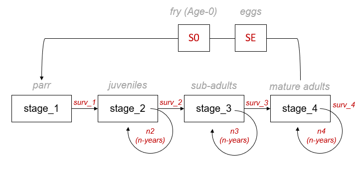
The life cycle modelling component of the CEMPRA tool is set up as a pre-birth pulse census (see Caswell 2000). Since the design of stage-structured matrix models does not easily allow for the initial number of eggs and fry to be represented as independent matrix elements (cells), their transitions are included within the fecundity term. In a pre-birth pulse census, we assume that the demographic census takes place immediately before spawning (fecundity), meaning that yearlings of the previous spawning year have survived a full time-step (Age-0/stage-0 to Age-1/stage-1). Yearlings (Age-0: egg & fry) must survive the entire census period to the start of the next census. Therefore, the Age-0 transitions (egg-to-fry survivorship: SE and fry-to-parr survivorship: S0) are accounted for within the fecundity element (cells) of the transition matrix (Table 1).
7.3.1 Vital Rates for Survivorship and Growth
The following table lists the vital rates for survivorship and growth:
| Parameter | Description |
|---|---|
| Nstage | The number of stages in the transition matrix (excluding Stage-0/Age-0). Each stage must span one or more years in the life cycle. In the reference example, there are four stages: stage_1, stage_2, stage_3, and stage_4. |
| surv_1 | Mean annual survivorship of individuals in each stage. If Nstage value was higher than four, additional rows would be added to the life cycle profile CSV file for surv_5, surv_6, etc. If the Nstage value is less than four, then the additional surv_X rows should be deleted from the life cycle profile. These survivorship estimates should be estimates of intrinsic density-independent survival (in the absence of density-dependent constraints). |
| year_1 | The number of years spent in each stage. Individuals in the simulation can spend more than one year in each stage. In the example input file, mature adults can spend up to five years in stage_4. If we were to set the year values to 1 for all stages, then we would have an age-based Leslie matrix model. If additional stages are added (or removed), be sure to modify rows in the life cycle profile CSV file accordingly (i.e., delete or add new rows). |
| SE | Egg survivorship (density-independent). |
| S0 | Age-0 fry survivorship (density-independent). |
Table: Vital rates for survivorship and growth in the life cycle model.
Ensure that all survivorship estimates represent hypothetical density-independent survivorship in the absence of density-dependent constraints. Density-dependent survivorship is accounted for in the next section. If density-independent survivorship is unknown, but strong, density-dependent constraints are to be included in the species profile, then it might be possible to simply set the density-independent survivorship estimate to a value close to 1.0 (e.g., S0: 0.999).
For fecundity, we have to consider the proportion of each age class that is sexually mature (mat), the proportion of the population that is female (SR: 0.5), the fecundity (eps: eggs per spawner) per spawning event, the spawning events per year (events), and the spawning interval (int). The calculation of individuals in stage class 1 (stage_1) also must account for the Age-0 survivorship of eggs and fry.
Sample fecundity function for stage class 4:
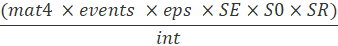
7.3.2 Vital Rates for Fecundity
The following table lists the vital rates for fecundity:
| Parameter | Description |
|---|---|
| mat_1 | The proportion of each stage class that is sexually mature (0 – 1). For example, in the demo species profile, 100% of the individuals become sexually mature at stage class 4, and the sexual maturity is 0% for all other stage classes. It is also possible for a stage class to have partial maturity (e.g., 0.85). If the Nstage value is different than four, then add or remove rows in the species profile so that the number of mat values matches the number of stage classes (Nstage value). |
| events | Spawning events per female per year. This parameter will almost always be set to 1 to indicate one spawning event per year per mature female. For populations with complex life history variants (e.g., systems with Spring Chinook & Fall Chinook), we recommend keeping this value at one and using two different species profiles to represent each life history variant. |
| eps | Eggs per spawning female. The mean fecundity per female per spawning event. |
| SR | The sex ratio is represented as the proportion of the population that is female. This value will almost always be set to 0.5 to indicate an equal proportion of males and females in the population. |
| int | Spawning interval (in years). This value will also be set to 1 for most species, indicating that mature individuals spawn each year. |
Table: Vital rates for fecundity in the life cycle model.
We can combine all parameters discussed in this section along with the example species profile (Figure 7.1) to construct a symbolic (mathematical) representation of the transition matrix ( ). The stage-to-stage transitions account for the probability of staying within each stage or advancing to the next stage based on the
). The stage-to-stage transitions account for the probability of staying within each stage or advancing to the next stage based on the surv_X and n-year spent within a stage year_X. The fecundity element of the matrix (top row) includes elements for fecundity and Age-0 survivorship.
Table 1. Symbolic Representation of the Transition Matrix
| stage_1 | stage_2 | stage_3 | stage_4 | |
|---|---|---|---|---|
| stage_1 | surv_1 * (1 - surv_1^( year_1 - 1))/(1 - surv_1^ year_1) | (mat2 * events * eps * sE * s0 * sR)/int | (mat3 * events * eps * sE * s0 * sR)/int | (mat4 * events * eps * sE * s0 * sR)/int |
| stage_2 | surv_1 - surv_1 * (1 - surv_1^(year_1 - 1))/(1 - surv_1^ year_1) | surv_2 * (1 - surv_2^( year_2 - 1))/(1 - surv_2^ year_2) | 0 | 0 |
| stage_3 | 0 | surv_2 - surv_2 * (1 - surv_2^( year_2 - 1))/(1 - surv_2^ year_2) | surv_3 * (1 - surv_3^( year_3 - 1))/(1 - surv_3^ year_3) | 0 |
| stage_4 | 0 | 0 | surv_3 - s3 * (1 - surv_3^( year_3 - 1))/(1 - surv_3^ year_3) | surv_4 * (1 - surv_4^( year_4 - 1))/(1 - surv_4^ year_4) |
The stage-to-stage transition probabilities are also expressed as functions from surv_X (annual survivorship with stage X) and year_X (number of simulation years within stage X). surv_X is the total annual probability of survival (i.e., regardless of staying within the current stage OR advancing to the next subsequent stage). The example below illustrates how the combined probability of staying within a stage or advancing to the next stage always equals surv_X regardless of n-years in each stage. Note that the sum of the yellow cells equals 0.6 (for both fates of staying within stage or advancing to the next stage).
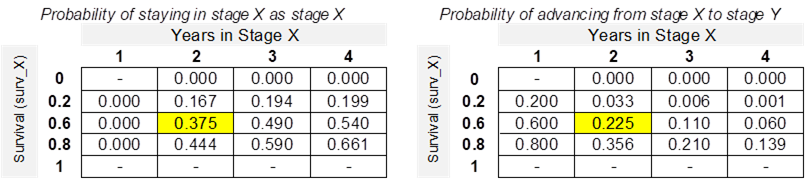
We can continue with the working example to represent the transition matrix numerically ( ). The fecundity element for
). The fecundity element for stage_4 is set at 45 since it accounts for the vital rates relating to maturity and Age-0 survivorship.
Net Fecundity (stage-4) = (mat4 * events * eps * sE * s0 * sR)/int
45 = (1 * 1 * 3,000 * 0.1 * 0.3 * 0.5)/1
Table 2. Numerical representation of the transition matrix
| stage_1 | stage_2 | stage_3 | stage_4 | |
|---|---|---|---|---|
| stage_1 | 0 | 0 | 0 | 45 |
| stage_2 | 0.3 | 0.231 | 0 | 0 |
| stage_3 | 0 | 0.069 | 0.474 | 0 |
| stage_4 | 0 | 0 | 0.426 | 0.756 |
The derived lambda value of the projection matrix (intrinsic rate of growth) in this example species profile is 1.21 (above 1.0), meaning that the population will continue to grow exponentially in the absence of density-dependent constraints.
7.4 Density-Dependent Constraints on Growth
It is rare for natural populations to grow in perpetuity without any constraints on growth, survival, and reproduction. Therefore, life cycle models will typically include a mechanism (or multiple mechanisms) to constrain population growth or limit high densities.
Stressor-response relationships can be incorporated into the life cycle model without accounting for density-dependent constraints, but the interpretation of the results will be limited to eigen analyses of intrinsic growth rates and sensitivities/elasticities assessments. Not only are these outputs difficult to communicate to diverse working groups, but they may also be misleading. If there are key demographic bottlenecks in the life cycle, then a density-independent model may inappropriately lead users to focus on stressors linked to fecundity or early life-stage survivorship before a key bottleneck (e.g., egg-to-fry survivorship) is experienced. However, if (in reality) a hypothetical population experiences strong density-dependent constraints on growth, then factors limiting habitat availability or productivity of a key life stage will become more influential. A common example of density-independent and density-dependent constraints on growth can be found in the transition between the early life stages of Steelhead (Oncorhynchus mykiss) as individuals transition from egg-to-fry (a density-independent life stage) and then from fry-to-smolts/parr (a density-dependent life stage) (Ward & Slaney, 1993).
The life cycle modeling component of the CEMPRA tool has two different mechanisms to incorporate density-dependent growth constraints. The first mechanism makes use of adult carrying capacity and compensation ratios (discussed below), while the second mechanism considers stage and location-specific carrying capacities. Incorporating density-dependent constraints with compensation ratios is convenient because users are only required to input a single value (an estimate of the adult carrying capacity); however, incorporating density-dependent constraints with stage and location-specific carrying capacities can provide more accurate results in systems with ample habitat data and knowledge of life stage-specific density constraints across habitat types. Both mechanisms of density-dependent constraints utilize the Beverton-Holt function to constrain the transition probability of key demographic bottlenecks.
The Beverton-Holt function calculates the expected number of individuals in the next time step (N at time + 1, or density) as a function of the number of individuals in the current time step (N at time). In the case of stage-structured matrix models, this relationship is expressed as the number of individuals transitioning between two stages (e.g., from stage 2 to stage 3). In the Beverton-Holt function, input parameters governing this relationship include an estimate of stage-specific carrying capacity (K), a baseline estimate of density-independent survival (S) (surv_X from the species profile) for the transition probability, and the number of individuals in the current stage class (Nt) for the simulation year.
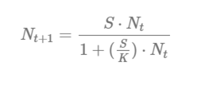
The following figure provides an overview of the Beverton-Holt function, showing the number of individuals at time (t) on the x-axis and the number of individuals at time + 1 on the y-axis. For example, this could be the number of Age-0 fry on the x-axis and the number of Age-1+ parr recruits on the y-axis. The curved black line shows the effects of density-dependent growth (limited recruitment as the number of individuals in the first stage is increased). The steep red line is the intrinsic productivity (survivorship, surv_X), which is 0.8 under hypothetical density-independent growth conditions. The blue line is the hypothetical carrying capacity of 100.
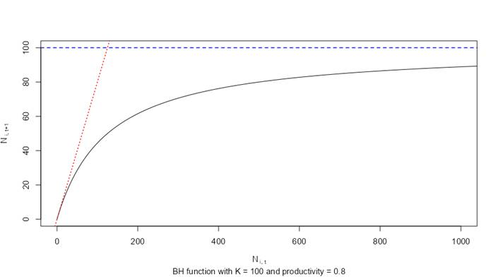
Beverton-Holt function for density-dependent growth shows the survivorship under density-independent growth (red line), the maximum carrying capacity (blue line), and the resulting relationship from the BH curve (black line).
7.4.1 Location and Stage-Specific Carrying Capacities
For more systems with ample habitat data and known relationships between habitat availability and maximum densities, it is possible to use location-specific carrying capacities for one or more rate-limiting life stages (e.g., Location X can produce up to 1,200 parr). If this is the case, a special table can be included that specifies the maximum number of individuals per stage class per life stage per location:
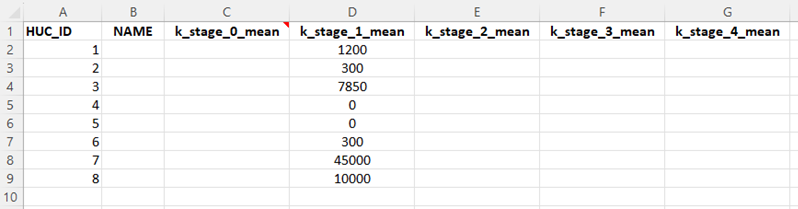
Location and stage-specific carrying capacity input data table.
This table (Location-specific capacities) is referred to as the locations carrying capacity table and exists as a special input file that can be used to control density-dependent growth in the life cycle model. Users must estimate the average carrying capacity for a given life stage at each location (e.g., k_stage_1_mean: 1,200) and the interannual variability (CV: coefficient of variation) in the carrying capacity (e.g., k_stage_1_cv: 0.1). If the location carrying capacity table is provided, any cells that are populated with values are assumed to have density-dependent constraints. Any cells that are left blank are assumed to be governed only by density-independent factors and do not have any density-dependent constraints.
In the previous example (Location-specific capacities), the population model will run with constraints on stage_1, meaning that the survivorship from stage_0 to stage_1 will be governed by a Beverton-Holt relationship, and the abundance (or density) of stage_1 individuals will be constrained for each location according to the values provided in the locations carrying capacity table.
The CEMPRA tool does not support the development of these locations and stage-specific carrying capacity estimates, but it’s assumed that relevant reference literature will be used to develop appropriate input values (e.g., if stage 1 is Steelhead parr; regional densities for Steelhead parr are roughly 1,500 parr/km of stream; and fish-accessible reaches within Rock Creek sum up to roughly 800m in length; then k_stage_1_mean should equal roughly 1,200 parr). Developing these estimates alongside a species profile can be laborious, but the advantage is that projection from the CEMPRA tool will ultimately account for habitat quality and habitat availability.
If the locations carrying capacity table is provided, the population projections will implement density-dependent growth constraints for species-specific life stages according to the stage-specific carrying capacities (with Beverton-Holt constraint on growth), and intrinsic density-independent survivorship estimates. The steel head spawners figure shows an example simulation for Steelhead from the CEMPRA tool with adult spawning on the y-axis and a stage-1 (parr) carrying capacity constraint set to 160,000 individuals. In the Steelhead example, the only density-dependent constraint is the parr carrying capacity of the system (set to 160,000). The number of adult spawners is, therefore, a derived metric from the life cycle model. Implementing density-dependent constraints with location and stage-specific carrying capacities is different from the approach with compensation ratios, where users are required to first input an estimate of the adult carrying capacity and work backwards from there.
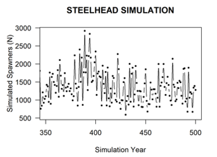
Simulation of Steelhead Spawners (y-axis) with stage_1 (parr) capacity set to 160,000.
Location and Stage-Specific Carrying Capacities Constraints in the Species Profile
| Parameter | Description |
|---|---|
| bh_stage_1, bh_stage_2, bh_stage_3, bh_stage_4 | The location and stage-specific carrying capacities constraints can be toggled on and off for each life stage with bh_stage_X input in the species profile. Setting the Value to 0 (or omitting the row) means that there will be no density-dependent constraint on a given life stage. Setting the Value to 1 will implement a Beverton-Holt style density-dependent constraint for the given life stage. If implemented, the location and stage-specific carrying capacity input data table must be supplied, and values must be populated for each location. |
7.4.2 Compensation Ratios for Density-Dependent Growth
It is possible to implement density-dependent constraints with both the compensation ratios and the location and stage-specific carrying capacities, but we recommend using only one mechanism for density-dependent growth to avoid confusion.
Compensation ratios (CR values) can be used in the CEMPRA life cycle model to parameterize and control density-dependent growth. Compensation ratios (described below) are a reparameterization of the classical Beverton-Holt function for density-dependent growth.
Compensation Ratios (CR) adjust the survivorship of each life stage based on the observed densities (abundance, N i,t) and stage-specific carrying capacities (Ki):
7.4.2.1 Compensation Ratio CR for life stage i:
The compensation ratio for life stage i adjusts the survivorship of each life stage based on the observed densities (abundance, Ni,t) and stage-specific carrying capacities (Ki):
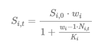
In the CR equation above, Si,0 is the baseline survivorship (surv_X) under density-independent growth conditions; wi is the compensation ratio (CR value) of life stage i; Ni,t is the current number of individuals in life stage i in a given time step (t); and Ki is the carrying capacity of life stage i. The compensation ratios, in essence, modify the survivorship of each life stage based on how far the stage-specific abundance (Ni,t) has departed from its assumed carrying capacity (Ki).
A plot of compensation ratios is provided below to illustrate their effects on stage-specific survivorship transitions. In this example, abundance values of a hypothetical stage class (i) are plotted along the x-axis with a carrying capacity (Ki) set to 100 individuals (blue vertical line). The hypothetical stage class (i) has a baseline survivorship (productivity) value of 0.8 in the absence of density-dependent growth conditions (horizontal red line). The y-axis on the plot shows how the default survivorship value of 0.8 is modified based on the stage-specific compensation ratio for stage class (CRi). The survivorship value for the stage class is suppressed as the abundance values exceed the carrying capacity K. The effects are amplified as compensation ratios are increased. Compensation ratios of 1.0 leave the vital rate unmodified. Compensation ratios less than 1.0 increase survivorship values (allowing for a potential positive effect of density). When the abundance of the age class is less than the carrying capacity, baseline survivorship values can actually increase. However, within the model code, adjusted survivorship values are fixed so that they never exceed 1.0 for any stage transition.
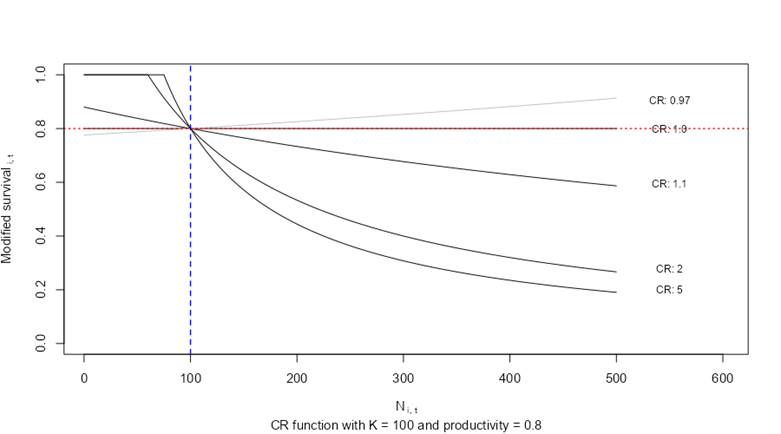
Influence of compensation ratios on stage-specific survivorship.
7.4.2.2 Stage-Specific Carrying Capacity Estimates:
When using compensation ratios, it is only possible to modify the carrying capacity for the adult age class via the K parameter in the life cycle profile. The K values for other age classes are derived from the stable-stage distribution of the underlying transition matrix. This means that users who implement density-dependent growth via compensation ratios can only modify stage-specific abundance relative to the stable stage distribution. If you know (or can estimate) critical location-specific and stage-specific capacities (e.g., maximum stage_1 parr at location X), then refer to Section 8.4.1 to implement density-dependent growth constraints with location and stage-specific carrying capacities.
Stage-specific capacities (K) with compensation ratios:
- K (Stage-0, eggs): Calculated as the product of the number of individuals in all mature age classes, multiplied by maturation probabilities for each class, the number of spawning events, eggs per female, sex ratio and spawning interval.
- K (Stage-0, fry): K values for young-of-the-year (fry/Age-0) individuals are calculated as the product of K (Stage-0, eggs) * the egg survival (SE).
- K (Stage-1): Calculated from the stable-stage distribution of the transition matrix (B) after setting the adult stage (Stage-4) to K (e.g., 100).
- K (Stage-2): Calculated from the stable-stage distribution of the transition matrix (B) after setting the adult stage (Stage-4) to K (e.g., 100).
- K (Stage-3): Calculated from the stable-stage distribution of the transition matrix (B) after setting the adult stage (Stage-4) to K (e.g., 100).
- K (Stage-4): Manually input by the user for the population of interest. This assumes that stage-4 is the only mature age class.
Stable-stage distribution (portions) under the example species profile Figure 7.1:
7.4.2.3 Stable Stage Distributions (as a fraction 0 - 1) & Stage-specific Carrying Capacities (K):
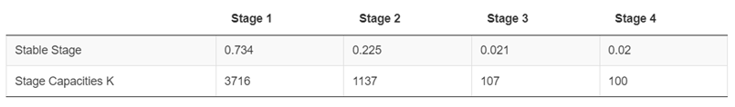
7.4.2.4 Density-Dependence Matrix (D):
Based on the derived stage-specific carrying capacities (K values), baseline survivorship values (SE, S0, surv_1, …) and the corresponding compensation ratios (cr_E, cr_0, cr_1, …), a density-dependence matrix (D) for a hypothetical population vector of eggs: 10,000,000, fry: 1,000,000; stage 1: 100,000, stage 2: 10,000, stage 3: 1,000 & stage 4: 100 will appear as follows:
The density-dependence matrix (D) contains vital rate modifiers for the estimated survivorship values at each stage transition. The density-dependence matrix (D) is multiplied with the corresponding transition matrix (B, Table 2) of density-independent transition probabilities. The finalized projection matrix (A) is the product of the density-dependent matrix (D), and the transition matrix (B) [A is a product of B*D = A]. The density-dependent matrix changes with each time step based on the number of individuals. The projection matrix (A) is, therefore, recalculated for each time step.
Compensation ratios are widely used as parameters in stock-recruitment functions, although they are admittedly less popular in classical matrix life cycle modeling. Steepness (the proportion of recruitment produced when stock size is reduced to 20% of initial biomass) is sometimes used in place of compensation ratios. Numerous other methods exist to introduce density dependence into stage-structured life cycle models. The compensation ratios are available as a default option for the CEMPRA tool to represent a versatile mechanism for applications to a large number of hypothetical species profiles. If location and stage-specific carrying capacities can be estimated, we recommend users set all compensation ratios to 1.0 for each stage class (therefore omitting compensation ratios) and refer to Section 8.4.1 for classical density-dependent growth with Beverton-Holt functions. For additional background, please review the following references to learn more about compensation ratios and life cycle modeling with density-dependent growth.
Compensation Ratios in the Species Profile
| Parameter | Description |
|---|---|
| cr_E, cr_0, cr_1, cr_2, cr_3, cr_4 | The compensation ratios for egg (cr_E), Age-0 fry (cr_0) and subsequent stage classes (cr_1 to cr_4) can be set. If the Nstage value is different than four, then add or remove rows accordingly. Compensation ratios can be set to 1.0 to omit the use of compensation ratios to govern density-dependent growth. |
7.4.2.5 Useful references to understand Compensation Ratios:
To further understand compensation ratios and their application in life cycle modeling, the following references are recommended:
- Goodyear, C. P. (1980). Compensation in fish populations. Biological monitoring of fish, 253-280.
- Myers, R. A. (2001). Stock and recruitment: generalizations about maximum reproductive rate, density dependence, and variability using meta-analytic approaches. ICES Journal of Marine Science, 58(5), 937-951.
- Rose, K. A., Cowan Jr, J. H., Winemiller, K. O., Myers, R. A., & Hilborn, R. (2001). Compensatory density dependence in fish populations: importance, controversy, understanding and prognosis. Fish and Fisheries, 2(4), 293-327.
- Myers, R. A., Bowen, K. G., & Barrowman, N. J. (1999). Maximum reproductive rate of fish at low population sizes. Canadian Journal of Fisheries and Aquatic Sciences, 56(12), 2404-2419.
- Walters, C. J., & Martell, S. J. (2004). Fisheries ecology and management. Princeton University Press.
- Forrest, R. E., McAllister, M. K., Dorn, M. W., Martell, S. J., & Stanley, R. D. (2010). Hierarchical Bayesian estimation of recruitment parameters and reference points for Pacific rockfishes (Sebastes spp.) under alternative assumptions about the stock–recruit function. Canadian Journal of Fisheries and Aquatic Sciences, 67(10), 1611-1634.
7.5 Stochastic Simulations
Several additional parameters are available to influence the stochasticity (variability) of the population projections. Implementing these parameters is useful for understanding the viability of the population and (over many simulations) estimating the number of batch replicates that fall below a given critical threshold (e.g., X adults).
7.5.1 eps_sd: Standard Deviation in Eggs-per-Spawner
| Parameter | Description |
|---|---|
eps_sd |
The Standard Deviation in Eggs-per-Spawner controls the variability in fecundity across simulation years and batch replicates. The example below shows a sample projection with eps_sd set to 250 and 750. In the example with eps_sd set to 750, there are several years with very high fecundity. Density-dependent constraints (if implemented) may attenuate the apparent effect of high eps_sd inputs. |
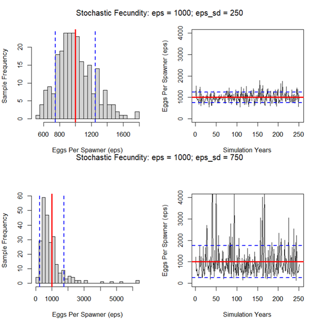
eps_sd Standard Deviation in Eggs-per-Spawner
7.5.2 egg_rho: Correlation in Egg Fecundity Through Time
| Parameter | Description |
|---|---|
egg_rho |
In natural populations, there will be good years and bad years. It’s assumed that good years will be good for large adults and small adults. If multiple mature stage classes contribute to spawning (fecundity) (i.e., maturity values are greater than 0), it is assumed that fecundity will be correlated between good and bad years across stage classes (i.e., stage_5, stage_6 & stage_7). egg_rho controls the degree of correlation in interannual fecundity between stage classes. See the following figure for an illustrative example. If egg_rho is low, and multiple stage classes contribute to spawning, then some stage classes may compensate for good/bad years. Conversely, if egg_rho is high, then the population may be highly volatile as all cohorts experience good/bad years simultaneously. |
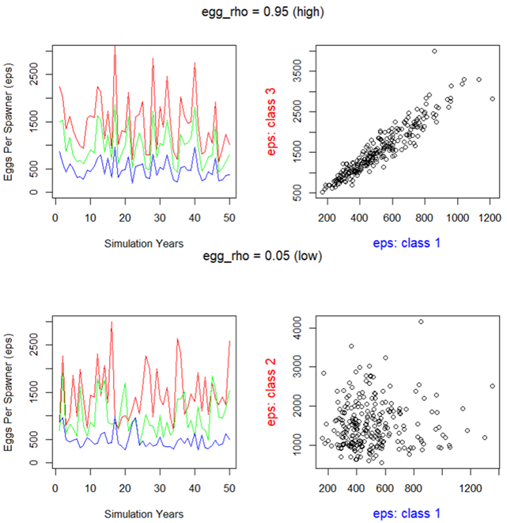
egg_rho: correlation in egg fecundity through time
7.5.3 M.cv: Coefficient of Variation (CV) in Interannual Stage-Specific Mortality
| Parameter | Description |
|---|---|
M.cv |
The Coefficient of Variation (CV) in stage-specific mortality (M.cv) is based on a beta distribution. This parameter allows for the modeling of variability in mortality rates across different life stages, contributing to a more dynamic and realistic simulation of population dynamics. |
7.5.4 M.rho: Correlation in Stage-Class Mortality Through Time
| Parameter | Description |
|---|---|
M.rho |
M.rho, the correlation in mortality through time, plays a critical role in modeling the variability of survivorship across life stages. In natural populations, the occurrence of good and bad years is often correlated across all stage classes, excluding eggs (SE). M.rho determines the degree of this correlation. A low M.rho value suggests that certain stage classes may compensate for good/bad years based on random sampling of survivorship, while a high M.rho implies that all cohorts may experience good/bad years simultaneously, leading to higher volatility in population dynamics. |
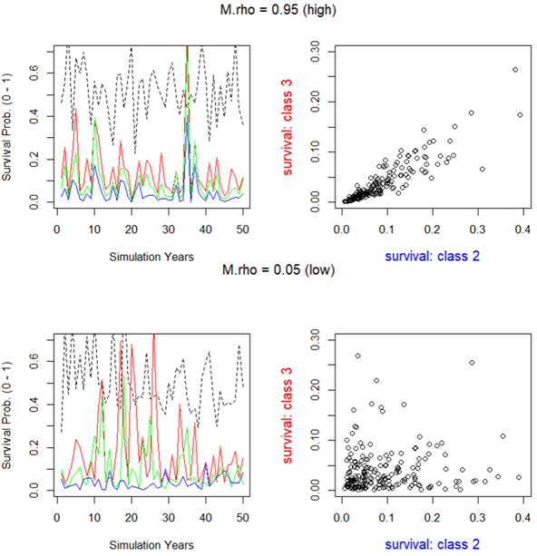
M.rho: correlation in survivorship through time
7.5.5 p.cat: Probability of Catastrophe per Generation
| Parameter | Description |
|---|---|
| p.cat | p.cat represents the Probability of Catastrophe per Generation. This parameter is scaled to the average generation time of the population, reflecting the annual probability of a catastrophic event occurring. It’s a critical factor in assessing the resilience and long-term sustainability of a population under varying environmental and anthropogenic pressures. |
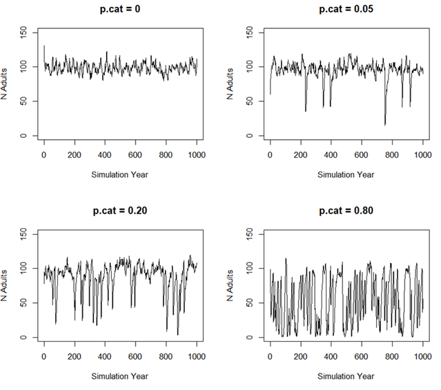
p.cat: Probability of Catastrophe per Generation
7.6 Building a Life Cycle Profile
A customized life cycle profile can be developed using the following template: Life Cycle Profile Template.
Appendix B includes sample species profiles for case study systems, such as Nicola Basin Chinook Salmon, Steelhead, and Coho Salmon. The COMPADRE (plant) and COMADRE (animal) online archives also offer vital rates for numerous species as of March 2023 (COMADRE Database). These archives can be valuable resources for reviewing vital rate estimates for similar species and taxa.
It’s recommended to first summarize the species’ life cycle using a simple diagram to represent key life stages. This diagram can be converted into a periodicity table (or life history schedule) to represent time spent in each life stage, as shown in the figure. A life history diagram coupled with a periodicity table can be helpful in mapping out transitions between key stages in the life cycle model. Recall that the life cycle model works with annual time steps. “Census” periods within the matrix model do not need to fall precisely at the one-year interval, but care should be taken to ensure that key transitions are not missed or double-counted. It is best to start from the spawning period and work forward, following a whole generation to its progeny
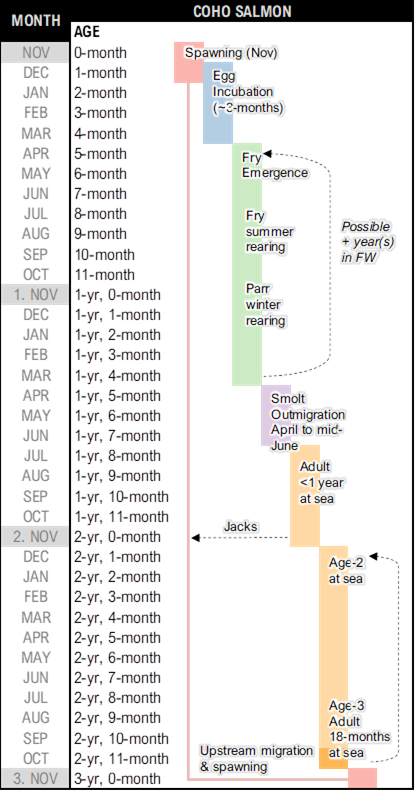
Sample combo life cycle diagram and periodicity table for a coastal population of Coho Salmon in British Columbia
Users can load a draft species profile into the R-Shiny application and modify it as needed. It is important to review the eigenanalysis of the projection matrix to ensure that lambda estimates, generation time, and stable-stage distributions align with expectations based on the species’ life history.
Parameters to double-check:
- Lambda (λ, instantaneous growth rates) estimates are reasonable (not substantially different from 1.0). If lambda estimates are lower than 1.0, review parameters.
- Generation time approximately matches the characterization of the species’ life history in the literature.
- Stable-stage distributions from the projection matrix are not substantially different from expectations.
7.7 Benefits and Limitations
The life cycle modeling component of the CEMPRA tool is a valuable resource for understanding and quantifying cumulative effects, linking critical stressors to key life stages, and supporting an understanding of the relevance of key drivers curtailing productivity and capacity. Related analyses have provided a useful framework to synthesize pathways for cumulative effects through the lens of population ecology ((Beechie et al., 2021); (Jorgensen et al., 2021); (Sorel, 2022); (Kendall et al., 2023)). Simulations allow user groups to play out hypothetical scenarios with multiple stressors, locations, and species profiles, making it possible to perform many complex calculations within a simple user interface.
However, there are key limitations to the CEMPRA tool and life cycle modeling in general. Depending on the parameterization of a species profile, there can be key stages and vital rates that are highly sensitive to perturbation. It can be challenging to discern whether these sensitivities reflect actual vulnerabilities in nature or are artifacts of the modeling framework. Therefore, some researchers emphasize the need to treat life cycle models as hypothesis generators until predictions and causal pathways can be empirically validated ((Roni et al., 2018)).
The CEMPRA tool does not account for complex variations in life history strategies, seasonal movement, individual exposure, and detailed habitat criteria. Therefore, it’s up to the users to carefully design stressor variables, stressor magnitude datasets, and stressor-response relationships such that linkages are already largely accounted for in the underlying input data. When summarizing results, it is advisable for user groups to focus on reviewing relative differences between scenarios compared to a default (status-quo) reference scenario. Interpreting results as relative differences is more relatable than trying to rationalize absolute values (e.g., “scenario A increased system capacity by ~10% relative to scenario B” vs “scenario A increased capacity by 321 fish relative to scenario B”).
User groups and practitioners should use life cycle models to help develop high-level goals for restoration and recovery programs ((Roni et al., 2018)). While useful for identifying key demographic bottlenecks and the sensitivity of those bottlenecks to the range of stressor values observed on the landscape (or projected through simulation), life cycle models are less useful for designing small-scale projects. Efforts should continue to validate and refine predictions with field data and empirical studies.
Leave questions and comments below (via your GitHub account)